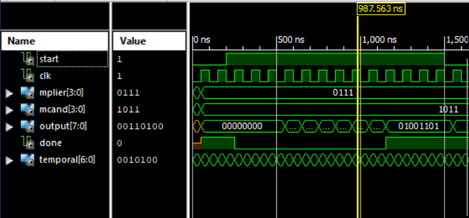

Overview
This was the final project completed for ECE 3561 - Advanced Digital Design. Using AMD's Xilinx software, this design implements a 4x4 sequential multiplier circuit in VHDL. The circuit takes in two 4-bit binary numbers and multiplies them to produce an 8-bit result as well as a carry bit. Key components of the design include two 4-bit shift registers, a counter, a full-adder, a system controller, and a custom 9-bit shift register.

Design
The multiplier design used two 4-bit shift registers to store inputs, a 9-bit custom shift register for the intermediate results, and a 4-bit counter to control iteration. The system controller managed data flow and computation timing, while the full adder computed partial products iteratively.
Design
The multiplier design used two 4-bit shift registers to store inputs, a 9-bit custom shift register for the intermediate results, and a 4-bit counter to control iteration. The system controller managed data flow and computation timing, while the full adder computed partial products iteratively.
